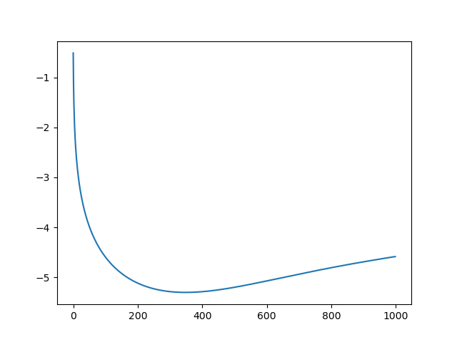
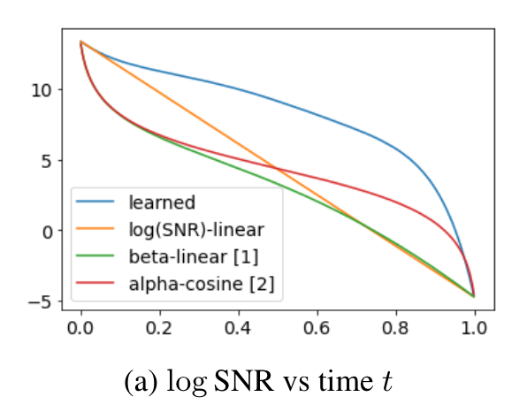
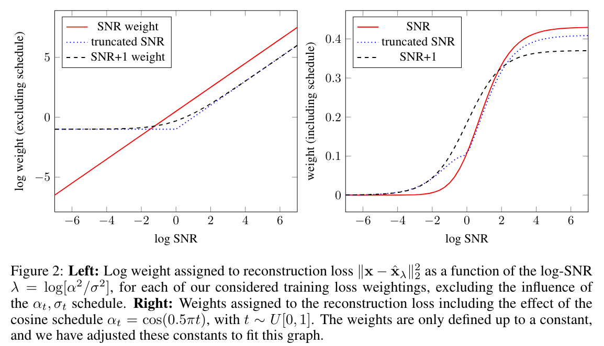
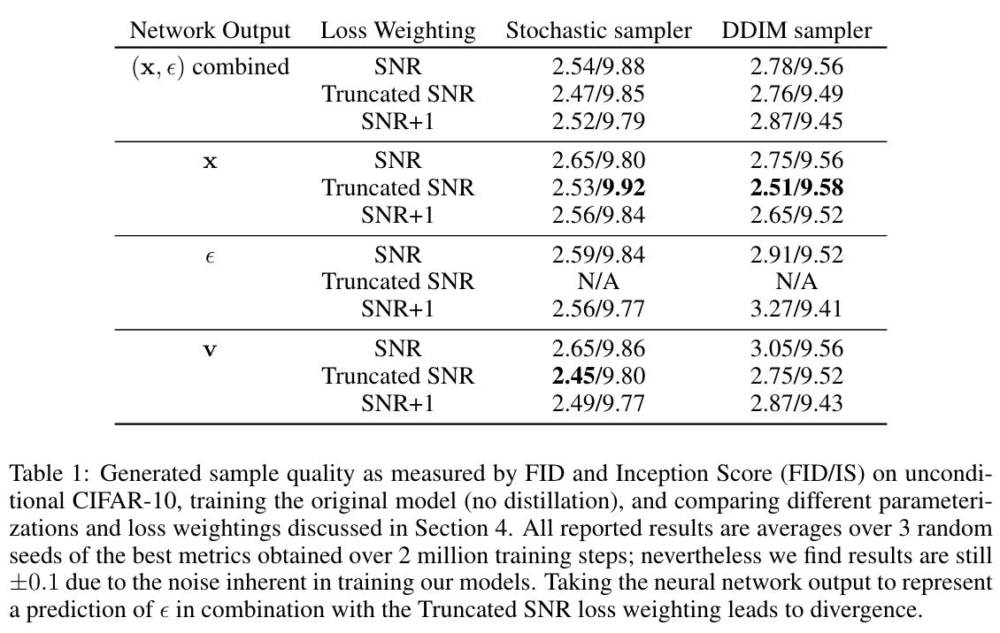

变分扩散模型
由于扩散模型存在多种解释角度，并且有很多人在研究它，因此大家用的推导体系和书写符号或多或少有一些差异。在 Google 的这两篇论文中——Variational Diffusion Models[1]、Progressive Distillation for Fast Sampling of Diffusion Models[2]，作者将信噪比显式地写入了扩散模型的公式之中，并由此引出了对可学习噪声序列、模型预测目标和损失函数权重的讨论。
引入信噪比
本节探讨扩散模型的形式化，主要内容其实与 DDPM[3] 基本一样，不同之处在于：
- 采用连续时间步 \(t\in[0,1]\) 而非离散时间步 \(t\in\{1,\ldots,1000\}\)，这有助于我们在具体实现时进行任意形式的离散化；
- 引入了信噪比的概念，方便后续对噪声序列、损失函数权重等方面进行讨论，有助于我们更好地理解扩散模型的加噪和去噪过程。
记 \(\mathbf x\sim p(\mathbf x)\) 为真实数据，\(\mathbf z_t\) 为 \(t\) 时刻的隐变量，\(t\in[0,1]\). 前向加噪过程定义为： \[ q(\mathbf z_t\vert\mathbf x)=\mathcal N\left(\mathbf z_t;\alpha_t\mathbf x,\sigma_t^2\mathbf I\right)\label{1}\tag{1} \] 其中 \(\alpha_t,\sigma_t^2\) 是关于 \(t\) 的光滑可导函数。事实上，DDPM 对应 \(\alpha_t=\sqrt{1-\sigma_t^2}\) 的情形，而 SMLD[4] 对应 \(\alpha_t=1\) 的情形。
在 \(\eqref{1}\) 式的定义下，我们定义信噪比和对数信噪比为： \[ \text{SNR}(t)=\alpha_t^2/\sigma_t^2,\quad\lambda_t=\log\text{SNR}(t)=\log(\alpha_t^2/\sigma_t^2)\label{2}\tag{2} \] 并假设信噪比随时间严格单调递减，即随着 \(t\) 增大，噪声占比越多。
根据 \(\eqref{1}\) 式，我们可以仿照 DDPM 的方法推导出 \(q(\mathbf z_t\vert\mathbf z_s)\)，其中 \(0\leq s<t\leq 1\)： \[ \begin{align} &q(\mathbf z_t\vert\mathbf z_s)=\mathcal N\left(\mathbf z_t;\alpha_{t|s} \mathbf z_s,\sigma_{t|s}^2\mathbf I\right)\\ \text{where}\quad&\alpha_{t|s}=\alpha_t/\alpha_s\\ &\sigma_{t|s}^2=\sigma_t^2-\alpha_{t|s}^2\sigma_s^2=\left(1-e^{\lambda_t-\lambda_s}\right)\sigma_t^2 \end{align}\tag{3}\label{3} \] 同样与 DDPM 类似，利用贝叶斯定理可以推导出 \(q(\mathbf z_s\vert\mathbf z_t,\mathbf x)\)： \[ \begin{align} &q(\mathbf z_s\vert\mathbf z_t,\mathbf x)=\mathcal N\left(\mathbf z_s;\tilde{\boldsymbol\mu}_{s|t}(\mathbf z_t,\mathbf x),\tilde\sigma^2_{s|t}\mathbf I\right)\\ \text{where}\quad&\tilde{\boldsymbol\mu}_{s|t}(\mathbf z_t,\mathbf x)=\frac{\alpha_{t|s}\sigma_s^2}{\sigma_t^2}\mathbf z_s+\frac{\alpha_s\sigma_{t|s}^2}{\sigma_t^2}\mathbf x=e^{\lambda_t-\lambda_s}(\alpha_s/\alpha_t)\mathbf z_s+(1-e^{\lambda_t-\lambda_s})\alpha_s\mathbf x\\ &\tilde\sigma^2_{s|t}=\frac{\sigma_{t|s}^2\sigma_s^2}{\sigma_t^2}=(1-e^{\lambda_t-\lambda_s})\sigma_s^2 \end{align}\tag{4}\label{4} \] \(\eqref{3},\eqref{4}\) 式的具体推导过程见本文最后的附录。
设生成模型为 \(p_\theta(\mathbf z_s\vert\mathbf z_t)\)，为方便计算，取： \[ p_\theta(\mathbf z_s\vert\mathbf z_t)=q(\mathbf z_s\vert\mathbf z_t,\mathbf x=\hat{\mathbf x}_\theta(\mathbf z_t)) \] 即将 \(q(\mathbf z_s\vert\mathbf z_t,\mathbf x)\) 中的真实数据 \(\mathbf x\) 换成模型 \(\hat{\mathbf x}_\theta(\mathbf z_t)\)，换句话说，\(\hat{\mathbf x}_\theta(\mathbf z_t)\) 的作用就是去预测真实无噪图像 \(\mathbf x\). 注意这里为了书写简便省略了与时间步 \(t\) 有关的输入。与 DDPM 一样，我们也可以将模型 \(\hat{\mathbf x}_\theta(\mathbf z_t)\) 重参数化为噪声预测模型 \(\hat{\boldsymbol\epsilon}_\theta(\mathbf z_t)\)： \[ \hat{\mathbf x}_\theta(\mathbf z_t)=\frac{1}{\alpha_t}\left(\mathbf z_t-\sigma_t\hat{\boldsymbol\epsilon}_\theta(\mathbf z_t)\right)\tag{5}\label{5} \] 尽管重参数化在数学上是等价的，但是对网络训练的影响是不同的。最直观的现象就是——当模型预测噪声时，由于 \(t\) 越大，\(\mathbf z_t\) 中原图分量的系数越接近 0，噪声分量的系数越接近 1，所以当 \(t\to1\) 时（信噪比很小时）模型只需要把输入复制到输出就能达到很低的 loss；换句话说，\(t\) 越大模型的学习越容易。相反，当模型预测原图时，\(t\) 越小其学习越容易。这也是为什么损失函数中对不同 \(t\) 的加权系数很重要。我们将在后文继续讨论这个问题。
扩散模型的训练是通过最大化 ELBO 完成的。本文只考虑离散时间情形——事实上，论文[1]还讨论了连续时间情形，这里暂且不谈。设一共有 \(T\) 步，为了与前文 \(t\in[0,1]\) 的设定相符，可以将 \([0,1]\) 分成 \(T\) 份，并记 \(t(i)=i/T,s(i)=(i-1)/T\). 为了书写方便，后文直接用 \(t,s\) 表示 \(t(i),s(i)\). ELBO 的推导与 DDPM 完全相同，这里就直接放结果： \[ \begin{align} \text{ELBO}=\underbrace{\mathbb E_{\mathbf z_0\sim q(\mathbf z_0\vert\mathbf x)}[\log p_\theta(\mathbf x\vert\mathbf z_0)]}_{\text{reconstruction}}- \underbrace{\text{KL}(q(\mathbf z_1\vert \mathbf x)\|p(\mathbf z_1))}_{\text{regularization}}- \sum_{i=1}^T\underbrace{\mathbb E_{\mathbf z_{t}\sim q(\mathbf z_{t}\vert\mathbf x)}\left[\text{KL}(q(\mathbf z_{s}\vert\mathbf z_{t},\mathbf x)\|p_\theta(\mathbf z_{s}\vert\mathbf z_{t}))\right]}_{\text{matching}} \end{align} \] 在 DDPM 中，ELBO 最后简化为了一个均方差损失，且把系数给直接丢掉了。但是正如前文所说，加权系数是很重要的，在本文的语境下，这个系数其实能用信噪比表示出来，具体而言： \[ \begin{align} \text{KL}\left(q(\mathbf z_{s}\vert\mathbf z_{t},\mathbf x)\|p_\theta(\mathbf z_{s}\vert\mathbf z_{t})\right)&=\frac{1}{2\tilde\sigma^2_{s|t}}\Big\Vert\tilde{\boldsymbol\mu}_{s|t}(\mathbf z_{t},\mathbf x)-\hat{\boldsymbol\mu}_\theta(\mathbf z_{t})\Big\Vert^2\\ &=\frac{\sigma_{t}^2}{2\sigma_{s}^2\sigma_{t|s}^2}\cdot\left(\frac{\alpha_{s}\sigma_{t|s}^2}{\sigma_{t}^2}\right)^2\cdot\Big\Vert\mathbf x-\hat{\mathbf x}_\theta(\mathbf z_{t})\Big\Vert^2\\ &=\frac{\alpha_{s}^2\sigma_{t|s}^2}{2\sigma_{s}^2\sigma_{t}^2}\Big\Vert\mathbf x-\hat{\mathbf x}_\theta(\mathbf z_{t})\Big\Vert^2\\ &=\frac{\alpha_{s}^2\left(\sigma_{t}^2-\alpha_{t|s}^2\sigma_{s}^2\right)}{2\sigma_{s}^2\sigma_{t}^2}\Big\Vert\mathbf x-\hat{\mathbf x}_\theta(\mathbf z_{t})\Big\Vert^2\\ &=\left(\frac{\alpha_{s}^2}{2\sigma_{s}^2}-\frac{\alpha_{t}^2}{2\sigma_{t}^2}\right)\Big\Vert\mathbf x-\hat{\mathbf x}_\theta(\mathbf z_{t})\Big\Vert^2\\ &=\frac{1}{2}\Big(\text{SNR}(s)-\text{SNR}(t)\Big)\Big\Vert\mathbf x-\hat{\mathbf x}_\theta(\mathbf z_{t})\Big\Vert^2\tag{6}\label{6} \end{align} \] 如果模型预测噪声，那么根据 \(\eqref{5}\) 式的重参数化，有： \[ \Big\Vert\mathbf x-\hat{\mathbf x}_\theta(\mathbf z_{t})\Big\Vert^2=\frac{\sigma_{t}^2}{\alpha_{t}^2}\Big\Vert\boldsymbol\epsilon-\hat{\boldsymbol\epsilon}_\theta(\mathbf z_{t})\Big\Vert^2=\frac{1}{\text{SNR}(t)}\Big\Vert\boldsymbol\epsilon-\hat{\boldsymbol\epsilon}_\theta(\mathbf z_{t})\Big\Vert^2\tag{7}\label{7} \] 将 \(\eqref{7}\) 式代入 \(\eqref{6}\) 式得： \[ \text{KL}\left(q(\mathbf z_{s}\vert\mathbf z_{t},\mathbf x)\|p_\theta(\mathbf z_{s}\vert\mathbf z_{t})\right)=\frac{1}{2}\left(\frac{\text{SNR}(s)}{\text{SNR}(t)}-1\right)\Big\Vert\boldsymbol\epsilon-\hat{\boldsymbol\epsilon}_\theta(\mathbf z_{t})\Big\Vert^2\tag{8}\label{8} \] 可见 DDPM 丢掉的系数就是前面那一坨。在 DDPM 的噪声序列设置下，这个系数与时间步的关系长这样：

因此，丢掉系数的作用就是减小了 \(t\) 较小时的权重，让模型更加注重学习 \(t\) 较大的情形，这一点也在 DDPM 原论文中提到了。
可学习噪声序列
Variational Diffusion Models 一文将可学习参数引入了加噪过程，使得噪声序列是学习出来的而非人为设置的。具体而言，作者将噪声序列参数化为： \[
\sigma_t^2=\text{sigmoid}(\gamma_{\boldsymbol\eta}(t))
\] 如果遵循 DDPM 的设定 \(\alpha_t=\sqrt{1-\sigma_t^2}\)，那么容易得到： \[
\begin{align}
&\alpha_t^2=\text{sigmoid}(-\gamma_{\boldsymbol\eta}(t))\\
&\text{SNR}(t)=\exp(-\gamma_{\boldsymbol\eta}(t))
\end{align}
\] 于是 \(\eqref{8}\) 式写作： \[
\text{KL}\left(q(\mathbf z_{s}\vert\mathbf z_{t},\mathbf x)\|p_\theta(\mathbf z_{s}\vert\mathbf z_{t})\right)=\frac{1}{2}\left(\exp(\gamma_{\boldsymbol\eta}(t)-\gamma_{\boldsymbol\eta}(s))-1\right)\Big\Vert\boldsymbol\epsilon-\hat{\boldsymbol\epsilon}_\theta(\mathbf z_{t})\Big\Vert^2
\] 就可以依此训练噪声序列了。注意 \(\exp(\bullet)-1\) 这个操作应使用各大深度学习库的 expm1() 函数以避免数值计算问题。
值得注意的是，由于 \(\text{SNR}(t)\) 应该是单调递减的，这要求 \(\gamma_{\boldsymbol\eta}(t)\) 应该是单调递增的，所以作者将其建模为一个单调神经网络。具体而言，这个神经网络有三层 linear，权重均限制为正数，中间有一个 sigmoid 激活，具体写作： \[ \gamma_{\boldsymbol\eta}(t)=l_1(t)+l_3(\phi(l_2(l_1(t)))) \] 其中 \(l_2\) 有 1024 个输出，其余仅有 1 个。
作者在论文中展示了学习出来的信噪比与其他人为设置噪声的信噪比的对比图，如下所示：

可见，学习出来的信噪比在初期下降远远慢于人为设置的信噪比。
模型预测目标
众所周知，原始 DDPM 预测的是噪声 \(\boldsymbol\epsilon\) 或者原数据 \(\mathbf x\)，那么有没有其他的预测目标呢？Progressive Distillation[2] 这篇论文对此做了讨论。特别说明，本节只考虑 DDPM 情形，即满足 \(\sigma_t^2+\alpha_t^2=1\).
首先，为什么要寻求新的预测目标？前文提到，\(t\) 越大，预测噪声越简单，而预测原数据越困难；反过来，\(t\) 越小则前者越困难、后者越简单。所谓简单，就是网络只需要 copy 输入即可，并不需要真的去学习数据分布，这无疑是不好的。因此，一个很直接的想法是让模型同时预测 \(\boldsymbol\epsilon\) 和 \(\mathbf x\)，推断时可以按照如下方式合并： \[ \hat{\mathbf x}=\sigma_t^2\hat{\mathbf x}_\theta(\mathbf z_t)+\alpha_t(\mathbf z_t-\sigma_t\hat{\boldsymbol\epsilon}_\theta(\mathbf z_t)) \] 当 \(t\to1\) 时，\(\sigma_t^2\to1,\,\alpha_t\to0\)，所以 \(\hat{\mathbf x}\approx\hat{\mathbf x}_\theta(\mathbf z_t)\)；反过来，当 \(t\to0\) 时，\(\hat{\mathbf x}\approx\mathbf z_t-\sigma_t\hat{\boldsymbol\epsilon}_\theta(\mathbf z_t)\). 因此，上述方法能够自动地根据 \(t\) 的大小在两种方案之间做插值。
不过，这样做看起来还是不够精巧，有没有更好的方法呢？论文提出了一个新的预测目标，我们称之为 v-prediction： \[ \mathbf v_t\equiv\alpha_t\boldsymbol\epsilon-\sigma_t\mathbf x\tag{9}\label{9} \] 在上述定义下，训练模型 \(\hat{\mathbf v}_\theta(\mathbf z_t)\) 来近似 \(\mathbf v_t\)，可以推出： \[ \hat{\mathbf x}=\alpha_t\mathbf z_t-\sigma_t\hat{\mathbf v}_\theta(\mathbf z_t) \] 可以看见，随着 \(t\) 从 0 变到 1，\(\mathbf v_t\) 会从 \(\boldsymbol\epsilon\) 逐渐变到 \(-\mathbf x\)，也就是说这个目标本身就是在做插值，能够调和预测 \(\boldsymbol\epsilon\) 和预测 \(\mathbf x\) 总在某一头变得太过简单的问题，始终保持模型在努力地学习。因此，v-prediction 在后续的许多工作中都受到了人们的青睐。
损失函数权重
目前为止，我们已经看到了好几种参数化方式，即不同的预测目标。它们之间相互关联，如果全部重参数化到 \(\mathbf x\) 空间，就体现为不同的权重系数：
SNR weighing：预测 \(\boldsymbol\epsilon\) 等价于以 \(\text{SNR}(t)\) 加权： \[ \Big\Vert\boldsymbol\epsilon-\hat{\boldsymbol\epsilon}_\theta(\mathbf z_t)\Big\Vert^2=\text{SNR}(t)\Big\Vert\mathbf x-\hat{\mathbf x}_\theta(\mathbf z_{t})\Big\Vert^2 \]
SNR+1 weighting：预测 \(\mathbf v_t\) 等价于以 \(\text{SNR}(t)+1\) 加权： \[ \Big\Vert\mathbf v_t-\hat{\mathbf v}_\theta(\mathbf z_t)\Big\Vert^2=(\text{SNR}(t)+1)\Big\Vert\mathbf x-\hat{\mathbf x}_\theta(\mathbf z_{t})\Big\Vert^2 \]
Truncated SNR weighting：预测 \(\mathbf x\) 与预测 \(\boldsymbol\epsilon\) 取 \(\max\)： \[ \max\left(\Vert\mathbf x-\hat{\mathbf x}_\theta(\mathbf z_{t})\Vert^2,\Vert\boldsymbol\epsilon-\hat{\boldsymbol\epsilon}_\theta(\mathbf z_t)\Vert^2\right)=\max\big(\text{SNR}(t),1\big)\Big\Vert\mathbf x-\hat{\mathbf x}_\theta(\mathbf z_{t})\Big\Vert^2 \]
当然，直接预测 \(\mathbf x\) 本身就是不加权了。

事实上，我们可以将预测目标与权重设置解耦开——虽然预测 \(\boldsymbol\epsilon\) 等价于以 \(\text{SNR}(t)\) 加权预测 \(\mathbf x\)，但是如果我们想用 SNR+1 weighting，只需要乘一个系数 \((\text{SNR}(t)+1)/\text{SNR}(t)\) 即可。因此，三种加权方式和四种预测目标（\(\boldsymbol\epsilon\)、\(\mathbf x\)、\(\mathbf v\) 以及同时预测 \(\boldsymbol\epsilon,\mathbf x\)）一共形成 12 种组合，作者分别进行了测试：

由表可见，除了预测 \(\boldsymbol\epsilon\) + Truncated SNR weighting 的组合无法收敛以外，其他组合表现都差不多。再次强调，这里的加权都是指重参数化到 \(\mathbf x\) 空间后的权重。
附录
\(q(\mathbf z_t\vert\mathbf z_s)\) 的推导
设 \(q(\mathbf z_t\vert\mathbf z_s)=\mathcal N\left(\mathbf z_t;\alpha_{t|s} \mathbf z_s,\sigma_{t|s}^2\mathbf I\right)\)，那么由 \(\mathbf x\) 到 \(\mathbf z_s\) 的一次采样可以写作： \[ \mathbf z_s=\alpha_s\mathbf x+\sigma_s\boldsymbol\epsilon_1,\quad\boldsymbol\epsilon_1\sim\mathcal N(\mathbf 0,\mathbf I) \] 由 \(\mathbf z_s\) 到 \(\mathbf z_t\) 的一次采样可以写作： \[ \mathbf z_t=\alpha_{t|s}\mathbf z_s+\sigma_{t|s}\boldsymbol\epsilon_2,\quad\boldsymbol\epsilon_2\sim\mathcal N(\mathbf 0,\mathbf I) \] 联立二式得： \[ \mathbf z_t=\alpha_{t|s}\alpha_s\mathbf x+\alpha_{t|s}\sigma_s\boldsymbol\epsilon_1+\sigma_{t|s}\boldsymbol\epsilon_2 \] 等价于进行如下一次采样： \[ \mathbf z_t=\underbrace{\alpha_{t|s}\alpha_s}_{\alpha_t}\mathbf x+\underbrace{\sqrt{\alpha_{t|s}^2\sigma_s^2+\sigma_{t|s}^2}}_{\sigma_t}\boldsymbol\epsilon,\quad\boldsymbol\epsilon\sim\mathcal N(\mathbf0,\mathbf I) \] 因此： \[ \begin{align} &\alpha_{t|s}=\alpha_t/\alpha_s\\ &\sigma_{t|s}^2=\sigma_t^2-\alpha_{t|s}^2\sigma_s^2 \end{align} \]
\(q(\mathbf z_s\vert\mathbf z_t,\mathbf x)\) 的推导
求解 \(q(\mathbf z_s\vert\mathbf z_t,\mathbf x)\) 可以使用贝叶斯定理： \[ \begin{align} q(\mathbf z_s\vert\mathbf z_t,\mathbf x)&=\frac{q(\mathbf z_t\vert\mathbf z_s,\mathbf x)q(\mathbf z_s\vert\mathbf x)}{q(\mathbf z_t\vert\mathbf x)}=\frac{q(\mathbf z_t\vert\mathbf z_s)q(\mathbf z_s\vert\mathbf x)}{q(\mathbf z_t\vert\mathbf x)}\\ &\propto\exp\left(-\frac{1}{2}\left(\frac{\Vert\mathbf z_t-\alpha_{t|s}\mathbf z_s\Vert^2}{\sigma_{t|s}^2}+\frac{\Vert\mathbf z_s-\alpha_s\mathbf x\Vert^2}{\sigma_s^2}-\frac{\Vert\mathbf z_t-\alpha_t\mathbf x\Vert^2}{\sigma_t^2}\right)\right)\\ &=\exp\left(-\frac{1}{2}\left(\underbrace{\left(\frac{\alpha_{t|s}^2}{\sigma_{t|s}^2}+\frac{1}{\sigma_s^2}\right)}_{A}\Vert\mathbf z_s\Vert^2+\underbrace{\left(\frac{-2\alpha_{t|s}\mathbf z_t}{\sigma_{t|s}^2}+\frac{-2\alpha_s\mathbf x}{\sigma_s^2}\right)}_{B}\cdot\mathbf z_s+C(\mathbf z_t,\mathbf x)\right)\right) \end{align} \] 因此 \(q(\mathbf z_s\vert\mathbf z_t,\mathbf x)\) 服从正态分布 \(\mathcal N\left(\tilde{\boldsymbol\mu}_{s|t}(\mathbf z_t,\mathbf x),\tilde\sigma^2_{s|t}\mathbf I\right)\)，且均值和方差分别为： \[ \begin{align} &\tilde{\boldsymbol\mu}_{s|t}(\mathbf z_t,\mathbf x)=\frac{-B}{2A}=\frac{\alpha_{t|s}\sigma_s^2}{\sigma_t^2}\mathbf z_s+\frac{\alpha_s\sigma_{t|s}^2}{\sigma_t^2}\mathbf x\\ &\tilde\sigma^2_{s|t}=\frac{1}{A}=\frac{\sigma_{t|s}^2\sigma_s^2}{\sigma_t^2} \end{align} \]
References
- Kingma, Diederik, Tim Salimans, Ben Poole, and Jonathan Ho. Variational diffusion models. Advances in neural information processing systems 34 (2021): 21696-21707. ↩︎
- Salimans, Tim, and Jonathan Ho. Progressive distillation for fast sampling of diffusion models. arXiv preprint arXiv:2202.00512 (2022). ↩︎
- Ho, Jonathan, Ajay Jain, and Pieter Abbeel. Denoising diffusion probabilistic models. Advances in neural information processing systems 33 (2020): 6840-6851. ↩︎
- Song, Yang, and Stefano Ermon. Generative modeling by estimating gradients of the data distribution. Advances in neural information processing systems 32 (2019). ↩︎